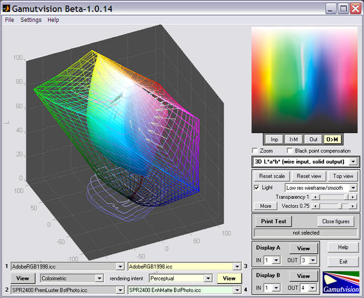
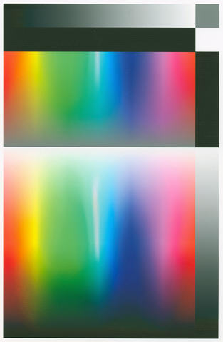
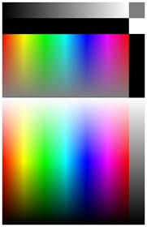
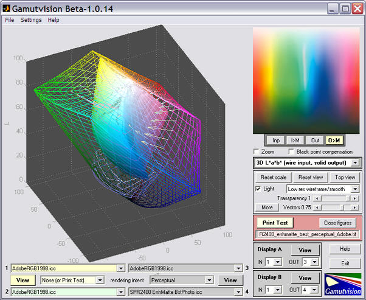
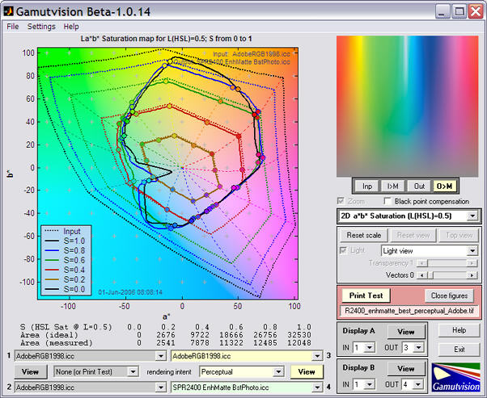
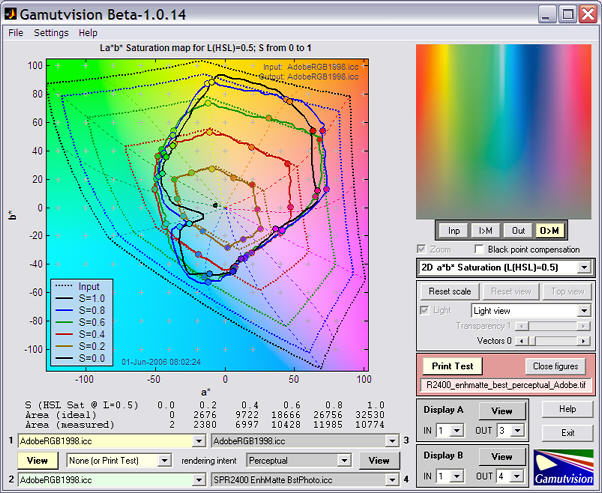
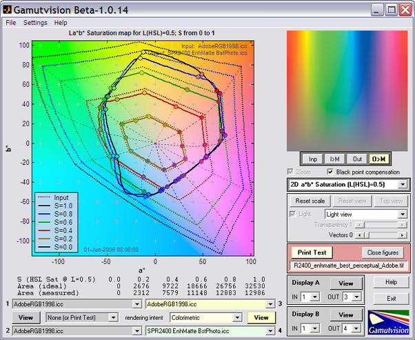

Gamutvision can analyze the performance of printer/paper/ICC profile combinations from ICC profiles themselves: you don't need to have the printer or paper in your possession. All you need is the ICC profile, which can often be dowloaded from the internet. With the profile and Gamutvision you to do a number of remarkable things.
Once in a while you may stumble on a defective ICC profile. Epson's standard profiles for their Ultrachrome and Ultrachrome K3 printers are generally excellent, but SPR2400 EnhMatte BstPhoto.icc, the profile for the Epson R2400 printer with Enhanced Matte paper at the best quality print setting, has a defect when used with perceptual rendering intent (the intent most frequently recommended for full-tone photogrpahic images). The problem pops right out at you when you run Gamutvision, using the ICC profile as input.

The white band in the bright green-cyan region doesn't belong! There is a corrresponding pothole in the 3D La*b* gamut plot. It's not a common color; you wouldn't notice a problem in most prints, but it might show up unexpectedly as white blotches in images of turquoise jewelry or a tropical lagoon. You could spend hours and burn lots of paper trying to diagnose the problem.
Of course, this is just a simulation. You need to make a print to verify the problem.
The results of printing the Print Test pattern (shown below) on the Epson R2400 (6.5x10 inches) with the SPR2400 EnhMatte BstPhoto.icc profile, Enhanced Matte paper, and perceptual rendering intent are shown on the right. The print was scanned with the Epson 3200 flatbed scanner and saved as an sRGB file. The similarity of the scanned print with the image above— derived from the profile— is quite stunning; nearly perfect to the eye. |
 |
 |
Here are the results of analyzing the scanned print using Gamutvision's Print Test feature (very similar to the Imatest Print Test module).

Though this closely resembles the above image,
it is derived from a scanned print rather than the ICC profile.
The results are nearly identical to the first image. The print was scanned on an Epson 3200 flatbed scanner set for ICM color management with output to Adobe RGB (1998). (This differs slightly from the image shown above, which was scanned to the sRGB color space for proper web viewing.) The comparison is even more impressive when we view the 2D La*b* saturation map.
Simulated |
 |
|  |
Of course the curves aren't identical, but they're remarkably close, especially when you consider that the the Epson 3200 is a relatively inexpensive scanner. It's not a cheap low-end scanner— it has very decent film scanning capability (now replaced by the 4990), but it's not an expensive laboratory instrument either. It costs about as much as a good compact digital camera.
This profile is usable as long as you don't use the prceptual rendering intent. The Relative Colorimetric intent works fine. Results are shown below.
